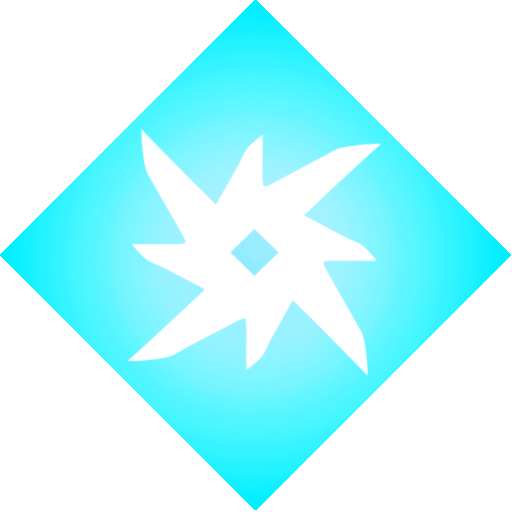
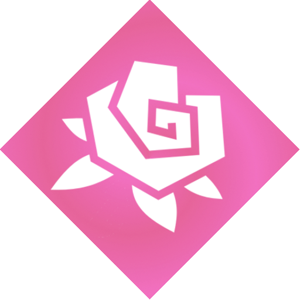
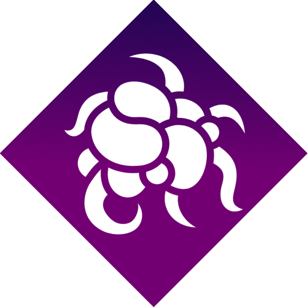

Эффекты
Некоторые виды оружия и способности способны накладывать различные эффекты, которые влияют на персонажей различными способами. Эффекты могут иметь длительность, а могут срабатывать единаразово. Некоторая часть эффектов относится к конкретному элементу (по факту это ничего не меняет, но нужно для некоторых способностей)
Огонь
Ожог
Горение
Воспламенение
Электричество
Электрошок
Удар молнии
Цепная молния
Лёд
Обморожение
Мерзлота
Заморозка
Токсин
Отравление
Коррозия
Природа
Тернии
Регенерация
Цветение
Пучина
Разложение
Немота
Маскировка
Невидимость
Исчезновение
Разное